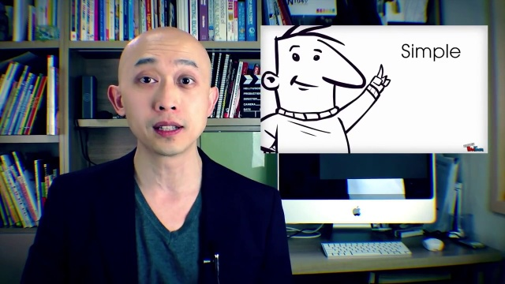

预测：Positive；强度：1.466；主要参考模态：text
下表贡献为遮挡前后固定目标类别概率的差值。正值为支持，负值为抑制；不是现实因果贡献或可加百分比。
| 模态 | 类别概率变化 | 强度变化 | 关键证据 |
|---|---|---|---|
| text | 0.7464 | 1.4950 | is simple, easy 4.370682914046122–5.874358228511531秒 (ctc_forced_alignment_feature_position_mapping_assumed) |
| audio | -0.0036 | -0.0458 | is simple, easy 4.370682914046122–5.874358228511531秒 (ctc_forced_alignment_feature_position_mapping_assumed) |
| vision | 0.0146 | 0.1224 | is simple, easy 4.370682914046122–5.874358228511531秒 (ctc_forced_alignment_feature_position_mapping_assumed) |
颜色越深表示门控越大；此图只显示选择行为。
text
applyingthesefourdesignconceptstoyourpresentationsissimple,easyandwillmakepeoplethinkyouturnedintoadesignguru.audio
applyingthesefourdesignconceptstoyourpresentationsissimple,easyandwillmakepeoplethinkyouturnedintoadesignguru.vision
applyingthesefourdesignconceptstoyourpresentationsissimple,easyandwillmakepeoplethinkyouturnedintoadesignguru.关键窗口按对固定目标类别的绝对影响选择，可能提供支持或抑制证据。完整逐窗口数值见配套CSV。
